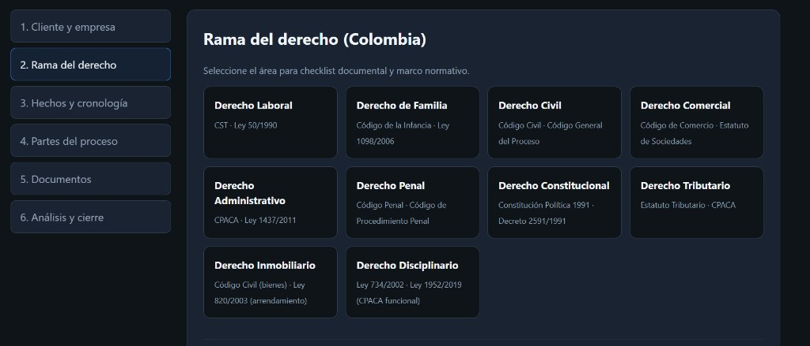
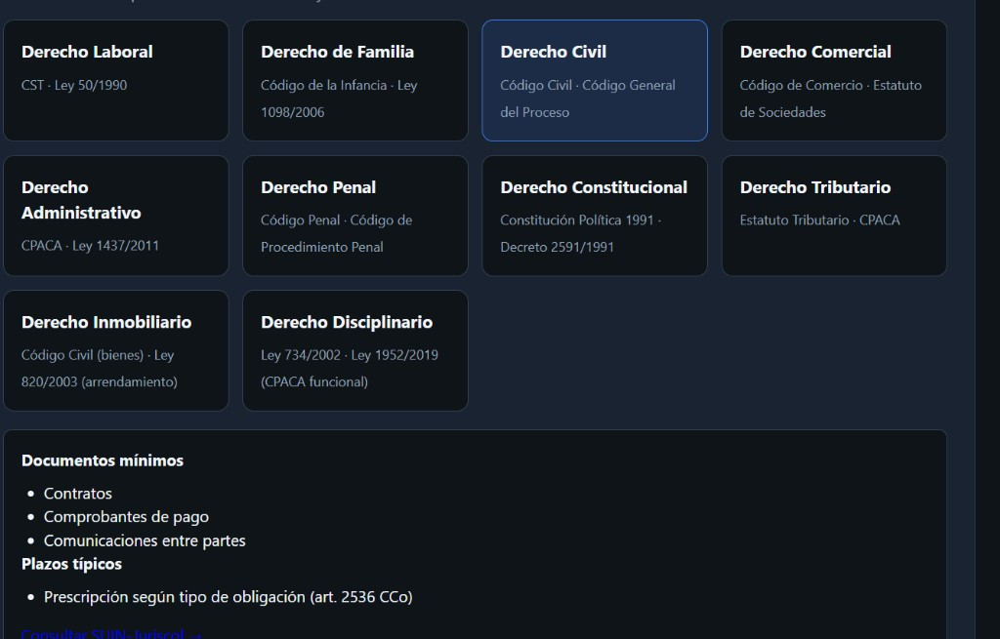
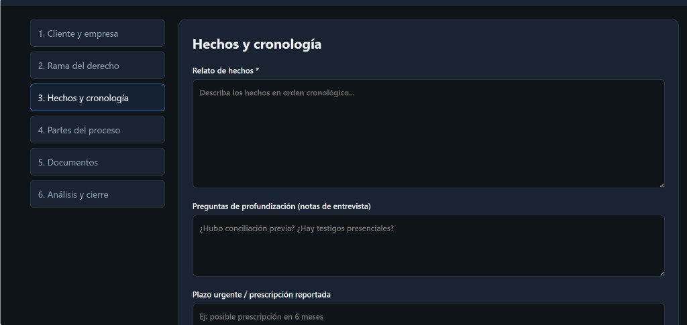
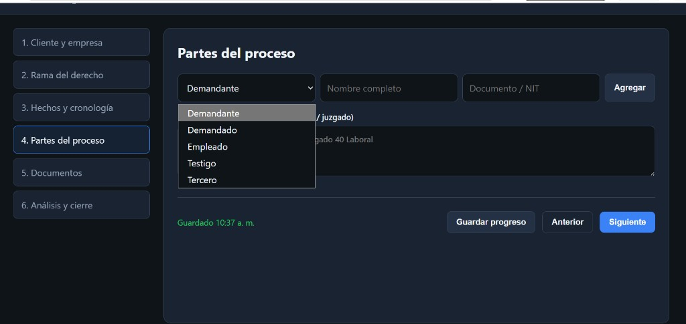
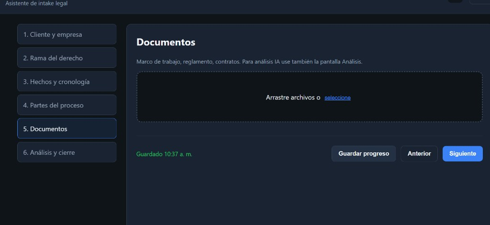
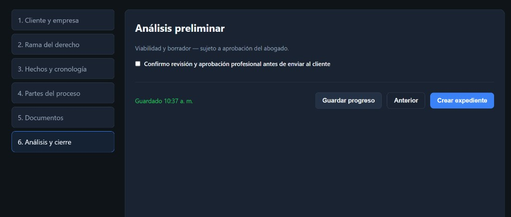
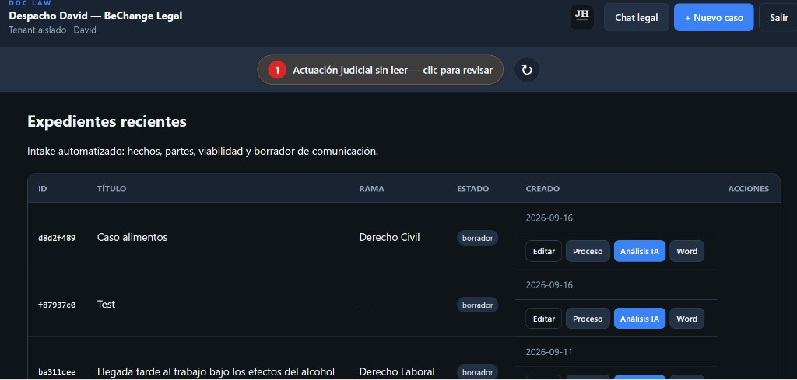
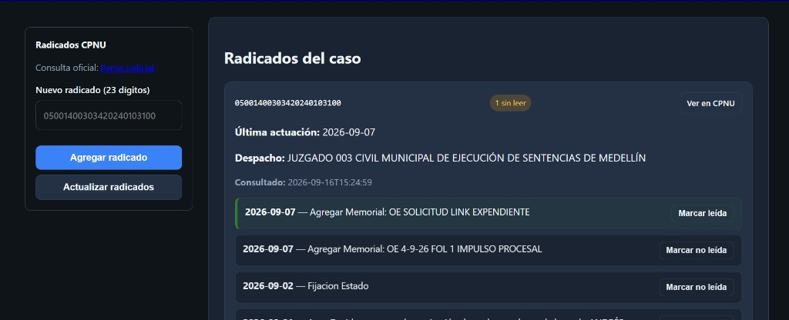
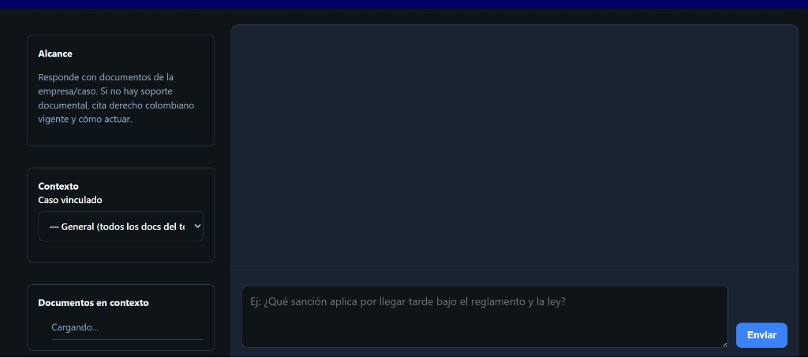

JH CONSULTING
Diseñamos e implementamos soluciones digitales que ordenan la operación, reducen trabajo manual y conectan datos, documentos e inteligencia artificial en entornos exigentes: legal, corporativo y multi-cliente.
Quiénes somos
No vendemos “un chatbot suelto”: entregamos procesos completos — desde la recepción del caso hasta el seguimiento procesal y la comunicación con respaldo documental.
La plataforma
Sistema web de intake y gestión de expedientes jurídicos para despachos en Colombia. Centraliza cliente, hechos, partes, documentos, análisis preliminar, radicados judiciales y asistente legal contextual.
Propuesta de valor
Cómo funciona
El sistema propone documentos mínimos y plazos según el área seleccionada, con enlace a SUIN-Juriscol.

Al elegir una rama (ej. Derecho Civil), aparecen requisitos documentales y referencias normativas inmediatas.

Cronología clara para alimentar el análisis posterior y el informe preliminar.

Registro estructurado de actores procesales y vínculo con juzgado cuando ya hay proceso.

Arrastre o selección de archivos; quedan asociados al expediente para IA y chat.

Confirmación de revisión profesional antes de comunicar al cliente. Estado “borrador” hasta aprobación.

Vista única de casos recientes: rama, estado, acciones rápidas (editar, proceso, Análisis IA, Word).
Barra de alertas cuando hay actuaciones judiciales sin leer.

Diferenciador clave
El abogado deja de “entrar todos los días a la web de la Rama” para saber si hubo novedad: la novedad llega al panel y al módulo del caso.


Cierre
DOC_LAW — by JH Consulting
Automatización con criterio jurídico. Demo en vivo bajo solicitud.
Material comercial · Sin precios · Imágenes de producto real · Colombia